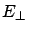

Masudul Haque, December 2002, Rutgers, New Jersey.
In December 2005, I wrote up an updated "Research Statement" and a longer report titled "Detailed Research Description".
Note (added Jan 2005): this was written in December 2002. It advertises my research interests at that time. Should be considered severely outdated. I'll probably write a new "Research Statement" when I'm applying for my next postdoc, maybe in December 2005.
My PhD training has been in condensed matter theory. I am interested in studying quantum many-body phenomena in solids, trapped atomic gases, artificial structures like quantum wells and dots, and other systems that display quantum coherence or collective phenomena.
My research during my PhD has been in three main areas. Work with my advisor, Andrei E Ruckenstein, has focused on Bose-Einstein condensation (BEC) phenomena. In collaboration with graduate student colleagues, I studied Wigner crystal physics. My latest project is a study of exciton condensation in coupled quantum wells. Although I will be pursuing several loose collaborations, this last project is primarily my own.
BEC Transition Temperature
My first major project, with Andrei Ruckenstein, involved the well-known ``Tc problem''. Calculation of the BEC transition temperature of a weakly repulsive Bose gas has continued to elude theorists, forty years after the first attempts. Our approach was to use second-order perturbation theory in the two-body t-matrix.
Using a quasiparticle description of the un-condensed Bose gas, we reduced the calculation of Tc to a calculation of the quasiparticle spectrum at the critical point. Our main contribution is a method of regularizing the infrared divergences appearing in the description of the transition point, resulting in a shift of Tc approximately proportional to a*sqrt(-ln[a]), where a is the scattering length. Our analysis points strongly to a non-analytic contribution in the dependence of Tc on the interaction.
The main results have been submitted, cond-mat/0212590, and a collection of shorter calculations will be posted as a comment in January.
Variational Description of Bose Condensate.
For the past several months, my work with my advisor has concentrated on a variational description of the condensed Bose gas. The variational wavefunction used is a squeezed coherent state, using ideas borrowed from Quantum Optics. Development of an alternate description is expected to provide additional insight into interaction effects in the weakly non-ideal Bose gas.
In developing this formalism, I calculated the variational parameters and the excitation spectrum. More importantly, I worked out the details of the manifestation of U(1) gauge invariance and gaplessness (Goldstone theorem), which are essential to any description of the condensed state.
Two directions are being explored. The first is an attempt to add more freedom to the variational function in a way that will incorporate effects beyond mean field. Secondly, the formalism is being applied to a description of interaction effects in matter-wave interference phenomena, in particular four-wave mixing of Bose condensates.
Wigner Crystal Physics.
In addition to the work done with my advisor, in spring 2001 I took the initiative to begin work on an independent research project, in collaboration with a graduate student colleague (S. Pankov). We started studying the AC response of a disorder-pinned Wigner crystal, under high magnetic fields. This project eventually turned into a consideration of Wigner crystal structures on a cryogenic liquid (e.g., helium). I later invited another PhD student (I. Paul) to join the collaboration.
For a 2D electron system on a liquid surface, surface distortions introduce additional physics, and can be tuned by varying the pressing electric field (

) used to hold the electrons to the surface. We found that, at densities low enough such that the inter-electron distance is comparable to the capillary length, there is at least one structural transition, so that a lattice geometry other than the usual triangular one becomes more stable. The transition is driven by the competition between two central forces between the electrons, the long-range Coulomb repulsion and a short-range attraction, the latter being due to surface distortions. This result has been submitted for publication (cond-mat/0211648).At present, our work with this system is evolving in two directions.
One program is a continuation of our previous work -- to map out exactly which structures are the stable ones in the various regions of the -density phase diagram. In addition, the system has a crossover from the single-electron lattices at low electron densities, to a charge-density-wave structure at higher densities. The details of this crossover are entirely unknown. Our current approach (myself and I. Paul) to both issues is to study the dynamical matrix for a number of lattice geometries.
I am particularly enthusiastic about the second direction, which is inspired by experimental attempts to achieve quantum melting of a Wigner crystal on a thin helium film. Because of the attraction due to exchange of ripplons (quantized surface vibrations), the electron liquid in the quantum regime is expected to have a Cooper instability. With S. Pankov, I am examining the BCS transition for 2D electrons on thin helium films.
Excitons in Biased Double Quantum Well.
My latest project, on which I plan to report during the 2003 APS March meeting, involves Bose condensation of excitonic systems in coupled quantum wells in semiconductors. This is essentially an independent project, and I intend to devote a significant part of the next year working on it.
The idea of producing an excitonic gas, dense enough and cold enough to condense, has experienced its latest revival in the context of double quantum wells. The wells are biased with an electric field so that the electrons and holes are spatially separated, leading to excitons with a longer lifetime than 3D excitons, and a faster cooling rate. Intriguing features of this system include the effect of laser light (used to create the exciton gas) on the condensate, the BCS - BEC crossover in the description of the condensation process, and the inherently non-equilibrium nature of the system. None of these aspects have been worked out in detail in the context of the 2D coupled-well system.
My broad aim is (I) to adapt calculations done for 3D and single-well systems to the double-well case, and (II) to investigate phenomena specific to the 2D coupled-well case (details of Kosterlitz-Thouless transition, condensation in 2D traps). As a first calculation, I am examining the order parameter enhancement due to the presence of a coherent (classical) laser field.
Collaboration with Piers Coleman is focusing on non-equilibrium aspects. I have also started discussions with Morrel H. Cohen and Phil Platzman (theorists), and am scheduling a visit to David Snoke's lab in Pittsburgh, where an experimental effort for Bose condensation of excitons in coupled wells is under way.
Future Directions.
In addition to the ongoing work, there are several ideas that I intend to follow up on, during the next year or so.
In summary, I plan to continue working on quantum many-body phenomena, in systems where inter-particle correlations and interactions have non-trivial effects. Apart from continuing projects started at Rutgers, I am eager to start work on new systems and models, and I intend to actively pursue and organize fresh collaborations.
Over the last few years, there has been considerable progress in creating artificial nanoscale structures, and in performing novel experiments with laser-cooled atomic systems. The synthesis of new materials continues to produce new surprises and challenges to theorists. Condensed-matter theory, the science of emergent phenomena in many-particle systems, is as vibrant as ever. I have enjoyed immensely my studies of this fascinating field, and wish to continue and broaden my investigations of correlated matter.